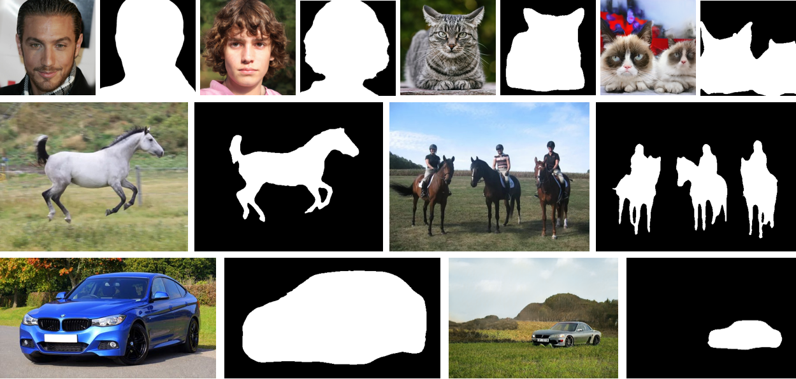
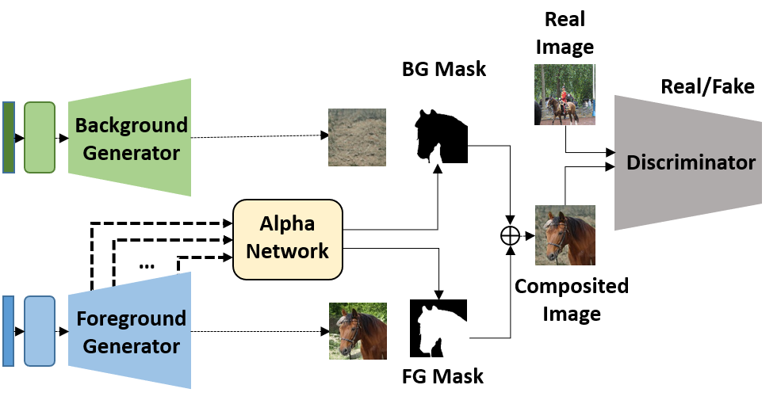
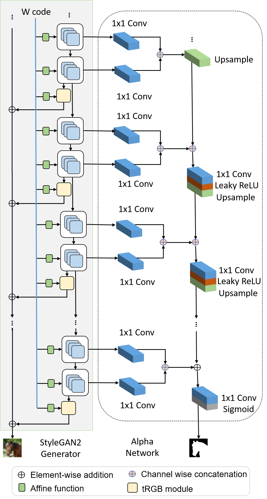
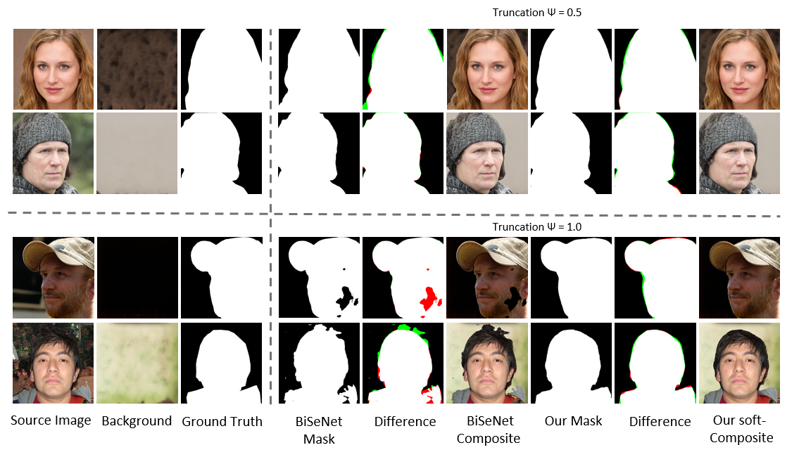
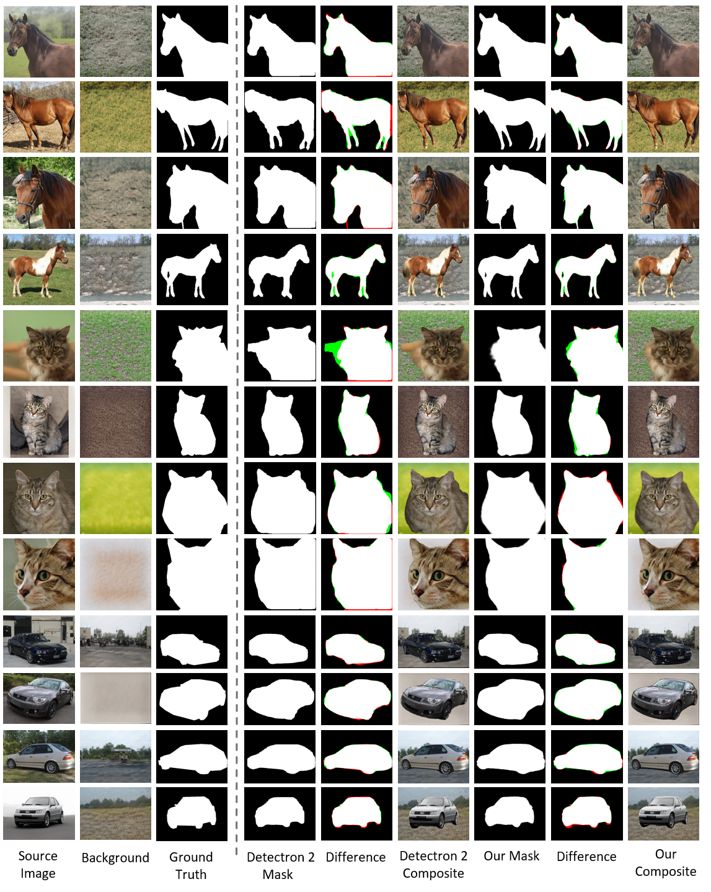
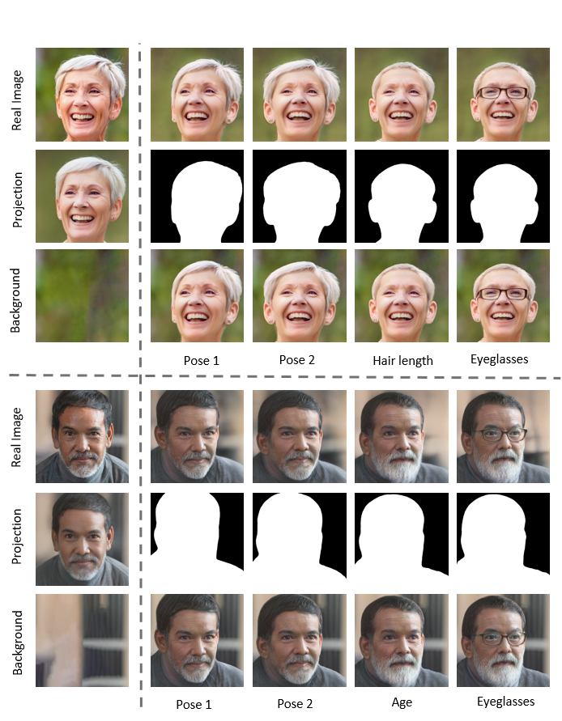

Labels4Free: Unsupervised Segmentation using StyleGAN
1KAUST
2 UCL, Adobe Research

We propose an unsupervised segmentation framework that enables foreground/background separation for raw input images. At the core of our framework is an unsupervised network, which segments class-specific StyleGAN images, and is used to generate segmentation masks for training supervised segmentation networks.
Abstract
We propose an unsupervised segmentation framework for StyleGAN generated objects. We build on two main observations. First, the features generated by StyleGAN hold valuable information that can be utilized towards training segmentation networks. Second, the foreground and background can often be treated to be largely independent and be composited in different ways. For our solution, we propose to augment the StyleGAN2 generator architecture with a segmentation branch and to split the generator into a foreground and background network.
This enables us to generate soft segmentation masks for the foreground object in an unsupervised fashion. On multiple object classes, we report comparable results against state-of-the-art supervised segmentation networks, while against the best unsupervised segmentation approach we demonstrate a clear improvement, both in qualitative and quantitative metrics.
Network Architecture


Our unsupervised segmentation network that makes use of pretrained generators G and G_bg to simultaneously train a segmentation Alpha network (A) and a `weak' discriminator D, without requiring supervision for ground truth masks.
Results
1. Face Segmentation

Qualitative results of our unsupervised framework on StyleGAN2 trained on FFHQ compared with BiSeNet trained on CelebA-HQ Masks. Note that the green and red areas are the `False Positives' and `False Negatives' with respect to the foreground in ground truth. We report our results on two truncation levels.
2. LSUN-Objects Segmentation

Qualitative results of our unsupervised framework on StyleGAN2 trained on LSUN-Horse, LSUN-Cat and LSUN-Car (LSUN-Object) compared with Detectron 2 trained on MS-COCO. Note that the green and red areas are the `False Positives' and `False Negatives' with respect to the foreground in ground truth.
3. Image Editing

Our method achieves better background preservation compared to original semantic edits in StyleFlow. For the real image, we first obtain a background layer, segmented using Label4Free and then completed using ContentAwareFill, and then for each edit using StyleFlow, we again segment them using our method and then composite back with the completed background layer (obtained above). Please compare the first row versus third rows.